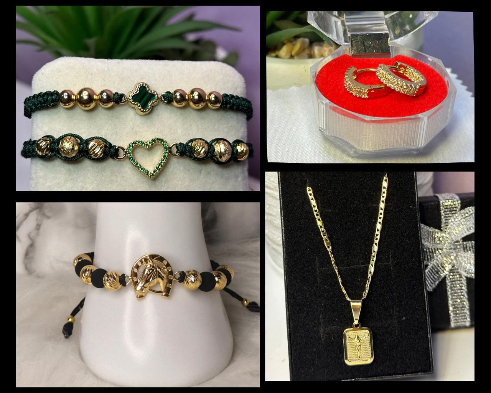
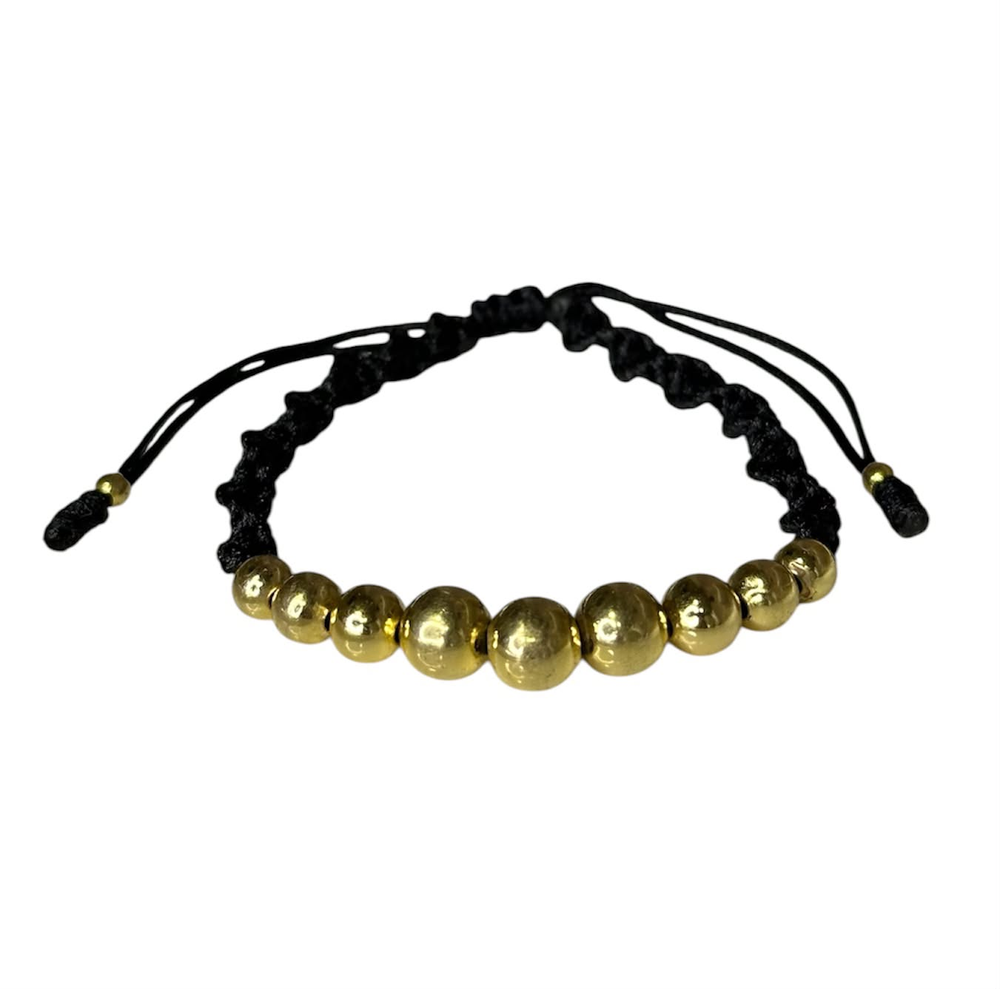
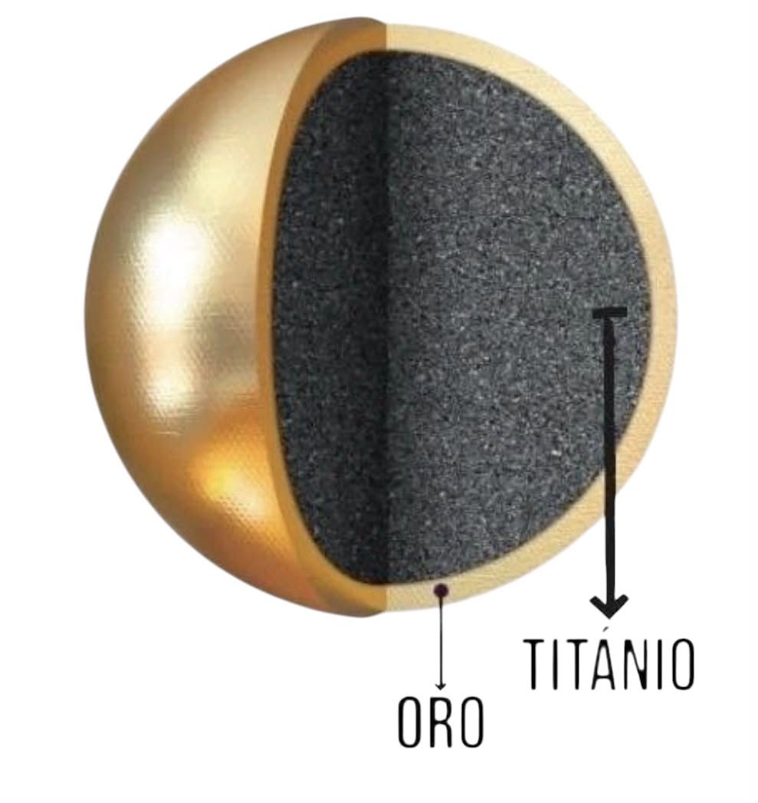

Oro laminado 18 k, tejido y hecho a tu medida.
Pulseras tejidas con balines y joyas solo por pedido. Cada pieza se hace para ti, con los colores y el diseño que elijas.

Lo que hacemos

Pulseras tejidas con balines
Tejidas a mano, con combinaciones de colores a tu gusto y detalles en dorado.
Conocer más
Oro laminado 18 k
Una capa de oro de 18 k sobre una base metálica: el brillo del oro a un precio más accesible.
Conocer másCómo hacer tu pedido
Cuéntanos tu idea
Dinos qué pieza quieres, los colores, la talla y para cuándo la necesitas.
Recibe la cotización
Te confirmamos el diseño, el valor y el tiempo de elaboración.
Elaboramos tu pieza
La tejemos especialmente para ti.
Entrega
Te la enviamos lista, con indicaciones para cuidarla.